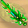
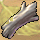
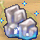
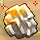
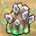

這邊的進階原料收集技能都需要使用『特製工具』才能工作
【原料類】
 （伐木技能） （伐木技能） （伐木技能）  狂風沙漠 （挖礦技能）  狂風沙漠 （挖礦技能） 狂風沙漠 （挖礦技能）  （研磨技能 隨機出現） （研磨技能 隨機出現） （研磨技能 隨機出現） 狂風沙漠 （狩獵技能） 狂風沙漠 （狩獵技能） 狂風沙漠 （狩獵技能） 風之谷 （採集技能） 風之谷 （採集技能） |

 （伐木技能） （伐木技能） （伐木技能）  狂風沙漠 （挖礦技能）  狂風沙漠 （挖礦技能） 狂風沙漠 （挖礦技能）  （研磨技能 隨機出現） （研磨技能 隨機出現） （研磨技能 隨機出現） 狂風沙漠 （狩獵技能） 狂風沙漠 （狩獵技能） 狂風沙漠 （狩獵技能） 風之谷 （採集技能） 風之谷 （採集技能） |